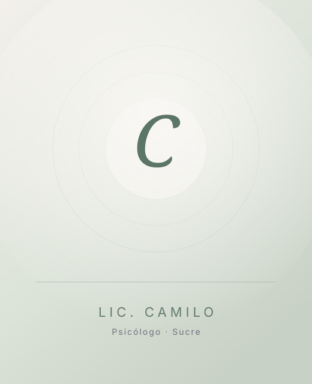

Ansiedad
Aprende a calmar la preocupación y a recuperar la sensación de control.
Psicólogo en Sucre, Bolivia
Acompaño a adolescentes y adultos a atravesar la ansiedad, la tristeza y los momentos difíciles, con herramientas prácticas y un trato cercano. Cuando estés listo, podemos hablar.
Licenciado en Psicología · Enfoque Cognitivo Conductual

Pedir ayuda no es una señal de debilidad. Es una decisión valiente para empezar a comprender lo que estás viviendo y aprender nuevas formas de afrontarlo.
Quizás te resulte familiar
No hace falta que algo sea “muy grave” para buscar apoyo. Si te identificas con alguna de estas situaciones, la terapia puede ayudarte.
La preocupación no se apaga, y te cuesta descansar o concentrarte.
Sientes una tristeza que no se va, aunque por fuera todo parezca normal.
El estrés del día a día te abruma y sientes que no puedes con todo.
Reaccionas de forma impulsiva y después te arrepientes.
Atraviesas un cambio difícil y no sabes cómo adaptarte.
Te cuesta poner límites o decir lo que realmente sientes.
Si algo de esto resuena contigo, no estás solo. Sentirse mejor es posible, y puedo acompañarte en ese camino.
Cómo puedo ayudarte
Soy Camilo, licenciado en psicología. Trabajo desde la terapia cognitivo conductual: un enfoque práctico y con respaldo científico, centrado en darte herramientas que puedas usar en tu vida diaria. Sin juicios y a tu ritmo.
Aprende a calmar la preocupación y a recuperar la sensación de control.
Recupera, poco a poco, la energía y las ganas de volver a tus cosas.
Ordena lo que sientes y encuentra formas más sanas de afrontarlo.
Atraviesa los cambios difíciles con apoyo y un plan claro.
Exprésate y pon límites sanos, sin culpa.
Comprende lo que te ocurre para afrontarlo con más claridad.
Un proceso enfocado en objetivos concretos, en menos sesiones.
El objetivo es siempre el mismo: que te sientas mejor y vuelvas a sentirte tú.
Preguntas frecuentes
Es normal tener dudas antes de empezar. Aquí respondo las más comunes, con calma y sin tecnicismos.
No. Muchas personas acuden a terapia para afrontar situaciones cotidianas, gestionar emociones, mejorar relaciones personales o atravesar momentos difíciles de una manera más saludable. Buscar ayuda psicológica no significa que exista un problema grave, sino que existe el deseo de comprenderse mejor y desarrollar herramientas para vivir con mayor bienestar.
Si sientes que una situación está afectando tu bienestar, tus relaciones, tu estado de ánimo o tu capacidad para disfrutar de tu vida cotidiana, buscar apoyo psicológico puede ser una buena decisión. No es necesario esperar a que el problema se vuelva muy grande para pedir ayuda. Muchas personas comienzan terapia simplemente porque desean sentirse mejor y comprender lo que están viviendo.
Cada persona tiene necesidades diferentes. Algunas situaciones pueden resolverse en pocas sesiones, mientras que otras requieren un proceso más amplio. La duración dependerá de tus objetivos, de la naturaleza del problema y del progreso que se vaya alcanzando durante el tratamiento.
Sí. La confidencialidad es uno de los principios fundamentales del trabajo psicológico. Todo lo que compartas durante las sesiones será tratado con respeto, privacidad y ética profesional, permitiéndote hablar con tranquilidad en un espacio seguro.
Sí. La Terapia Cognitivo Conductual es uno de los enfoques psicológicos con mayor respaldo científico. Ha demostrado ser eficaz para ayudar a personas que enfrentan ansiedad, depresión, dificultades emocionales, problemas de adaptación y otros desafíos cotidianos. Su objetivo es brindar herramientas prácticas para mejorar el bienestar y la calidad de vida.
Da el primer paso
No tienes que tener todo claro para empezar. Podemos comenzar con una primera conversación por WhatsApp, sin compromiso, y ver juntos cómo puedo acompañarte.
Escribir por WhatsApp